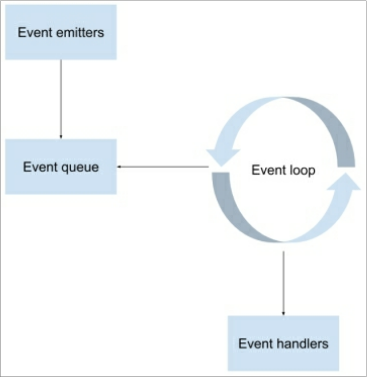

MEAN is an abbreviation for MongoDB, Express, Angular, and Node.js. The concept behind it is to use only JavaScript-driven solutions to cover the different parts of your application. The advantages are significant and are as follows:
/usr/bin/ruby -e "$(curl -fsSL https://raw.githubusercontent.com/Homebrew/install/master/install)"Step 2: install MongoDB, paste this command in the terminal
brew install mongodbStep 3: start the MongoDB daemon:
~/mongodb/bin/mongod
System.out.print("What is your name?");
String name = System.console().readLine();
System.out.print("Your name is: " + name);
In this example, the program executes the first and second lines, but any code after the second line will not be executed until the user inputs their name. This is synchronous programming, where I/O operations block the rest of the program from running. However, this is not how JavaScript works. Because it was initially written to support browser operations, JavaScript was designed around browser events. Even though it has vastly evolved since its early days, the idea was to allow the browser to take the HTML user events and delegate them to JavaScript code. Let's have a look at the following HTML example:
<span>What is your name?</span>
<input type="text" id="nameInput">
<input type="button" id="showNameButton" value="Show Name">
<script type="text/javascript">
let showNameButton = document.getElementById('showNameButton');
showNameButton.addEventListener('click', function() {
alert(document.getElementById('nameInput').value);
});
// Rest of your code...
</script>
In the preceding example, we have a textbox and a button. When the button is pressed, it will alert the value inside the textbox. The primary function to watch here is the addEventListener() method.
As you can see it takes two arguments: the name of the event and an anonymous function that will run once the event is emitted. We usually refer to arguments of the latter kind as a callback function. Notice that any code after the addEventListener() method will execute accordingly regardless of what we write in the callback function.
The browser manages a single thread to run the entire JavaScript code using an inner loop, commonly referred to as the event loop. The event loop is a single-threaded loop that the browser runs infinitely. Every time an event is emitted, the browser adds it to an event queue. The loop will then grab the next event from the queue to execute the event handlers registered to that event. After all of the event handlers are executed, the loop grabs the next event, executes its handlers, grabs the next event, and so on. You can see a visual representation of this process in the following diagram:

const circle = require('./circle.js');
console.log(`The area of a circle of radius 4 is ${circle.area(4)}`);
On the first line, foo.js loads the module circle.js that is in the same directory as foo.js.
Here are the contents of circle.js:
const { PI } = Math;
exports.area = (r) => PI * r ** 2;
exports.circumference = (r) => 2 * PI * r;
The module circle.js has exported the functions area() and circumference(). Functions and objects are added to the root of a module by specifying additional properties on the particular exports object.
Variables local to the module will be private because the module is wrapped in a function by Node.js (see module wrapper). In this example, the variable PI is private to circle.js.
The module.exports property can be assigned a new value (such as a function or object).
Below, bar.js makes use of the square module, which exports a Square class:
const Square = require('./square.js');
const mySquare = new Square(2);
console.log(`The area of mySquare is ${mySquare.area()}`);
The square module is defined in square.js:
// assigning to exports will not modify module, must use module.exports
module.exports = class Square {
constructor(width) {
this.width = width;
}
area() {
return this.width ** 2;
}
};
const http = require('http');
const fs=require('fs');
class Person {
constructor(name, age) {
this.name = name;
this.age = age;
}
}
module.exports = Person;
teacher.js
const Person = require('./person');
class Teacher extends Person {
constructor(name, age, salary) {
super(name, age);
this.salary = salary;
}
}
module.exports = Teacher;
student.js
const Person = require('./person');
class Student extends Person {
constructor(name, age, unit) {
super(name, age);
this.unit = unit;
}
}
module.exports = Student;
mainApp.js
const Student = require('./modules/student');
const Teacher = require('./modules/teacher');
const teacher = new Teacher('ABC', 29, 1500);
const student = new Student('XYZ', 19, 'FIT2095');
console.log(teacher.salary);
console.log(student.unit);
Now observe the following:
npm initThe output of the above command is a file named package.json contains:
{
"name": "nodeapp",
"version": "1.0.0",
"description": "",
"main": "server.js",
"scripts": {
"test": "echo \"Error: no test specified\" && exit 1",
"start": "node server.js"
},
"author": "",
"license": "ISC"
}
Now, let's install a package from the NPM repository.
npm install expressThe above command will do two things:
{
"name": "nodeapp",
"version": "1.0.0",
"description": "",
"main": "server.js",
"scripts": {
"test": "echo \"Error: no test specified\" && exit 1",
"start": "node server.js"
},
"author": "",
"license": "ISC",
"dependencies": {
"express": "^4.16.3"
}
}
let http = require('http');
http.createServer(function (request, response) {
console.log('request ', request.url);
let d = new Date();
let currentTime = d.getHours() + ":" + d.getMinutes() + ":" + d.getSeconds() + ":" + d.getMilliseconds();
response.writeHead(200);
response.write('Hello from FIT2095!! the time is : ' + currentTime);
response.end();
}).listen(8080);
console.log('Server running at http://127.0.0.1:8080/');
to run:
$ node server.jsFrom the above code, observe the following:
let http = require("http");
let fs = require("fs");
http.createServer(function (request, response) {
console.log("request ", request.url);
let filePath = "." + request.url;
if (filePath === "./") {
filePath = "./index.html";
}
fs.readFile(filePath, function (error, content) {
if (error) {
fs.readFile("./404.html", function (error, content) {
response.writeHead(404, { // file not found
"Content-Type": "text/html",
});
response.end(content, "utf-8");
});
} else {
response.writeHead(200, { // OK
"Content-Type": "text/html",
});
response.end(content, "utf-8");
}
});
})
.listen(8080);
console.log("Server running at http://127.0.0.1:8080/");
<html>
<body>
<h1>
Hello from HTML file
</h1>
</body>
</html>
login.html
<html>
<body>
<label>Username</label>
<input type="text" /> </br>
<label>password</label>
<input type="password" /> </br>
</body>
</html>
404.html
<html>
<body>
<h1>File Not Found :(</h1>
</body>
</html>
now let's start the server:
$ node server.jstest your server by visiting pages like:
http://example.com/over/there?name=Tim&age=20Note:
let http = require("http");
let url = require("url");
http.createServer(function (req, res) {
console.log("URL=" + req.url);
res.writeHead(200, {
"Content-Type": "text/html",
});
var baseURL = "http://" + req.headers.host + "/";
var url = new URL(req.url, baseURL);
let params = url.searchParams;
console.log(params);
let msg = params.get("year") + " " + params.get("month");
res.end(msg);
}).listen(8080);
Now:
http://localhost:8080/getDate?year=2021&month=7where:
let http = require('http');
let fs = require('fs');
let fileName = 'index.html';
http.createServer(function (request, response) {
console.log('request ', request.url);
let url = request.url;
console.log('request ', url);
switch (url) {
case '/':
fileName = 'index.html';
break;
case '/about':
fileName = 'about.html';
break;
case '/contact':
fileName = 'contact.html';
break;
default:
fileName = 'error.html';
break;
}
fs.readFile(fileName, function (error, content) {
response.writeHead(200, {
'Content-Type': 'text/html'
});
response.end(content, 'utf-8');
});
}).listen(8080);
console.log('Server running at http://127.0.0.1:8080/');
index.html
<html>
<body>
<p>About:
<a href="http://localhost:8080/about">About</a>
</p>
<p>Contact us:
<a href="http://localhost:8080/contact">Contact US</a>
</p>
</body>
</html>
The code above has a problem, which is all the URLs reference a specific server (localhost:8080). What will happen if the app is installed on a different server or served from a different port? All pages will be reached.
Therefore, the best practice is to make all the URLs relative to the server that serves the app by:
<html>
<body>
<p>About:
<a href="/about">About</a>
</p>
<p>Contact us:
<a href="/contact">Contact US</a>
</p>
</body>
</html>
about.html
<html>
<body>
<p>
<a href="/">Home</a>
</p>
About Page
</body>
</html>
contact.html
<html>
<body>
<p>
<a href="/">Home</a>
</p>
Contact Page
</body>
</html>
error.html
<html>
<body>
<h1>404 Page not found!!</h1>
<p>
<a href="/">Home</a>
</p>
</body>
</html>
Now, run the server by executing this command:
node server.jstest your server by visiting pages like:
/**
*
* @param {day} d
* @param {month} m
* @param {year} y
* @returns week number since August 3,2020; returns -1 if the input is before 3rd of August 2020
*/
function getDaysDiff(d, m, y) {
let returnValue = -1;
let currentDay = new Date();
currentDay.setDate(parseInt(d));
currentDay.setMonth(parseInt(m) - 1); // months start from 0
currentDay.setYear(parseInt(y));
let firstDay = new Date("8/3/2020"); // first day in semester 2
if (currentDay >= firstDay) {
var diffDays = parseInt((currentDay - firstDay) / (1000 * 60 * 60 * 24)); //gives day difference
returnValue = (Math.floor(diffDays / 7) + 1);
}
return (returnValue);
}